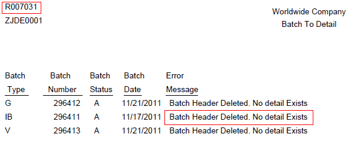

The Batch to Detail and Out of Balance Integrity Report (R007031) provides batch level level information on integrity issues and does the following automatically:
Deletes empty batch header records from F0011 with no detail records in Accounts Receivables (AR), Accounts Payable (AP), or General Ledger (GL) modules.
Updates the batch status of a batch header record in the F0011 table to 'D' (posted) if the detail records in the AR, AP, GL tables are posted, but the header record is unposted.
NOTE: The functionality of R007031 Batch to Detail and Out of Balance integrity report from Xe/ERP 8.0 release has been split into following integrity reports in 8.9 release and subsequent releases:
R007031 Batch to Detail - Batch to detail update functionality
R007032 Batches Out of Balance - Post out of balance verification
This document is intended for Finance Functional users who will be running and troubleshooting the General Accounting Integrity reports.
Details
Program Functionality for release 8.9 and above
The Batch to Detail report (R007031) first looks for the detail records (in tables listed below) corresponding to the Batch Number in F0011 batch header table. If it does not find any corresponding detail records, it deletes the batch header and prints a message on the report indicating that the batch was deleted if any one of these situations apply:
No records exist for batch type G in the F0911 table.
No records exist in either the F03B11 table or the F03B13 and F03B14 tables and the A/R Integrity Check Flag processing option is set to '1'.
No records exist in either the F0411 table or the F0413 and F0414 tables and the A/P Integrity Check Flag processing option is set to '1'.
If it does find the corresponding detail records, it further compares the Batch Status (ICIST) in F0011 batch header table with the Post Status (POST) for the corresponding transactions in AR, AP, GL tables. If all corresponding transaction records in the batch are marked as posted and batch header is unposted, it would update the status of the batch header to 'D' in the F0011 table. For example, if all F0911 records for batch type G are posted, but the batch header record for the batch in the F0011 table is not posted, the report updates the status of the F0011 record to 'D' (posted).
Program Functionality for releases Xe and ERP8.0
The Batch to Detail and Out of Balance Integrity Report (R007031) is the result of a two part process:
1. Post out of balance verification
The Post out of balance verification process reviews the net amount (debits equal to credits) for F0911 general ledger transactions in each batch. If the net amount is not zero, it would calculate the net difference and prints the batch details on the report. If the amounts net to zero, the batch is in balance and does not print.
2. Batch to detail update
The Batch to Detail update process first looks for the detail records (in tables listed below) corresponding to the Batch Number in F0011 batch header table. If it does not find any corresponding detail records, it deletes the batch header and prints a message on the report indicating that the batch was deleted if any one of these situations apply:
No records exist for batch type G in the F0911 table.
No records exist in either the F03B11 table or the F03B13 and F03B14 tables and the A/R Integrity Check Flag processing option is set to '1'.
No records exist in either the F0411 table or the F0413 and F0414 tables and the A/P Integrity Check Flag processing option is set to '1'.
General Accounting Tables:
Account Ledger (F0911)
Accounts Receivables Tables:
Customer Ledger (F03B11)
Receipts Header (F03B13)
Receipts Detail (F03B14)
Accounts Payable Tables:
Accounts Payable Ledger (F0411)
Accounts Payable - Matching Document (F0413)
Accounts Payable Matching Document Detail (F0414)
If it does find the corresponding detail records, it further compares the Batch Status (ICIST) in F0011 batch header table with the Post Status (POST) for the corresponding transactions in AR, AP, GL tables. If all corresponding transaction records in the batch are marked as posted and batch header is unposted, it would update the status of the batch header to 'D' in the F0011 table. For example, if all F0911 records for batch type G are posted, but the batch header record for the batch in the F0011 table is not posted, the report updates the status of the F0011 record to 'D' (posted).
Setup for release 8.9 and above
Processing Options
Date Range Tab
1. From Date and 2. Thru Date
Enter a date range (From and Thru) to limit the records the system selects for processing.
A default of blank will run over the entire table unless a value for Prior Days is entered below.
2. Prior Days:
Enter the number of prior days (to the current date) to limit the records the system selects for processing. For example, if you specify 30 for this processing option the system selects records starting 30 days ago through today.
A default of blank will run over the entire table unless a value is specified for From and Thru Dates.
NOTE: Since R007031 is a batch level report, the system uses the batch date, not the general ledger transaction date, when selecting records.
A/R Tab
1. A/R Integrity Check Flag
Enter '1' to expand the integrity check to include the F03B11, F03B13 and F03B14 tables for Accounts Receivable records.
A default of blank will only compare and evaluate Batch Header (F0011) to Account Detail(F0911) records.
NOTE:
If this option is set to 1, and no F0911 records exist and no records are in any of the Accounts Receivable tables, the batch header is deleted and a message prints on the report notifying you that it was deleted. If posted detail records are in the Accounts Receivable tables, but no corresponding F0911 records exist, the batch is ignored and it does not appear on the report.
If you leave this processing option blank and no Account Ledger (F0911) records exist, the batch header in the F0011 table is not deleted because the integrity check does not include the Accounts Receivable tables. The batch does not appear on the report.
A/P Tab
1. A/P Integrity Check Flag
Enter '1' to expand the integrity check to include the F0411, F0413, F0414 tables for Accounts Payable records.
A default of blank will only compare and evaluate Batch Header (F0011) to Account Detail(F0911) records.
NOTE:
If this option is set to 1, and no F0911 records exist and no records are in any of the Accounts Payable tables, the batch header is deleted and a message prints on the report notifying you that it was deleted. If posted detail records are in the Accounts Payable tables, but no corresponding F0911 records exist, the batch is ignored, and it is not displayed on the report.
If you leave this processing option blank and no F0911 records exist, the batch header in the F0011 table is not deleted because the integrity check does not include the Accounts Payable records. The batch is not displayed on the report.
Batch Tab
1. Batch Type
Enter a batch type (from UDC 98/IT) to limit the integrity check.
A default of blank will select all Batch Types.
2. Starting Range Of Batch Numbers and 3. Ending Range Of Batch Numbers
Enter a batch number range to limit the integrity check.
A default of blank will select all the batch numbers.
Data Selection
Do not specify any data selection criteria for this report.
Setup for releases Xe and ERP8.0
Processing Options
Report Tab
1. Out of Balance Report
A default of Blank will not run the report for Post out of balance verification.
Enter '1' to run the report for Post out of balance verification.
2. Batch to Detail Report
A default of Blank will not run the report for Batch to Detail verifications and update.
Enter '1' to run the report for Batch to Detail verifications and update.
NOTE: At least one of the processing options above must be specified as '1', in order for the report to run. If both are left blank, neither the Out of Balance Report, nor the Batch to Detail Report will be run and the report will be printed as Blank.
Date Range Tab
1. From Date and 2. Thru Date
Enter a date range (From and Thru) to limit the records the system selects for processing.
A default of blank will run over the entire table unless a value for Prior Days is entered below.
2. Prior Days:
Enter the number of prior days (to the current date) to limit the records the system selects for processing. For example, if you specify 30 for this processing option the system selects records starting 30 days ago through today.
A default of blank will run over the entire table unless a value is specified for From and Thru Dates.
NOTE: Since R007031 is a batch level report, the system uses the batch date (F0011.ICDICJ), not the general ledger transaction date, when selecting records.
Ledger Type Tab
1. Additional Ledger Type
Specify an additional ledger type for the system to include in the integrity check.
A default of blank will select only records for ledger type AA.
A/R Tab
1. A/R Integrity Check Flag
Enter '1' to expand the integrity check to include the F03B11, F03B13 and F03B14 tables for Accounts Receivable records.
A default of blank will only compare and evaluate Batch Header (F0011) to Account Detail(F0911) records.
NOTE:
If this option is set to 1, and no F0911 records exist and no records are in any of the Accounts Receivable tables, the batch header is deleted and a message prints on the report notifying you that it was deleted. If posted detail records are in the Accounts Receivable tables, but no corresponding F0911 records exist, the batch is ignored and it does not appear on the report.
If you leave this processing option blank and no Account Ledger (F0911) records exist, the batch header in the F0011 table is not deleted because the integrity check does not include the Accounts Receivable tables. The batch does not appear on the report.
A/P Tab
1. A/P Integrity Check Flag
Enter '1' to expand the integrity check to include the F0411, F0413, F0414 tables for Accounts Payable records.
A default of blank will only compare and evaluate Batch Header (F0011) to Account Detail(F0911) records.
NOTE:
If this option is set to 1, and no F0911 records exist and no records are in any of the Accounts Payable tables, the batch header is deleted and a message prints on the report notifying you that it was deleted. If posted detail records are in the Accounts Payable tables, but no corresponding F0911 records exist, the batch is ignored, and it is not displayed on the report.
If you leave this processing option blank and no F0911 records exist, the batch header in the F0011 table is not deleted because the integrity check does not include the Accounts Payable records. The batch is not displayed on the report.
Data Selection
You may specify a batch number and batch type in data selection. This would help to improve processing time for the report.
Reviewing and Resolving the Integrity
Prerequisite Note: Review and correct any discrepancies that are identified on the R007021 Transactions to Batch Headers integrity report before you run the R007031 Batch to Detail integrity report. For more information on the R007021 Transactions to Batch Headers Integrity Report, refer to Overview of Transactions to Batch Headers Integrity Report In EnterpriseOne (R007021).

It will print the error message - Batch Header Deleted. No detail Exists, if it does not find any associated detail records pertaining to the batch header.
NOTE: Please note that R007031 would not display the batch related information for which it updates the status of the batch header to D in the F0011 table (if all corresponding transaction records in the batch are marked as posted). Only R007021 would print the batch records having discrepancy with error message - Batch Header (F0011) Unposted / Detail (XYZ) Posted (where XYZ could be either of F0911/F03B11/F03B13/F03B14/F0411/F0413/F0414 tables) whereas R007031 would just update the F0011 batch status. See Overview of Transactions to Batch Headers Integrity Report In EnterpriseOne (R007021) Overview of Transactions to Batch Headers Integrity Report (R007021) for additional information.
Frequently Asked Questions
Question 1: How can one update/delete the Blank batches? Client has lot of blank batches which is the result when the system hangs while they are encoding a transaction. Is there a way where one can purge all blank batches?
Answer 1: One can run R007031 Batch to Detail integrity report. This integrity report will delete all the empty batch headers with no detail records. Please do note that the R007031 integrity report will not delete a Batch Header “In Use” if there are no associated records in the account detail table - F0911. Enhancement Bug 20983666 - DELETE BATCH HEADER IN USE AFTER A SPECIFIED TIME has been issued to address this issue
Question 2: Is there any possible way to restrict system from deleting the batch headers for a particular batch type, for instance 9B batch type?
Answer 2: To prevent the system from deleting an empty batch header, enter 'X' in the Description02 field of the batch type in UDC 98/IT. An X in that location of that UDC table prevents the program from deleting batch header records for the corresponding batch type.